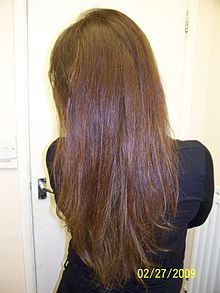
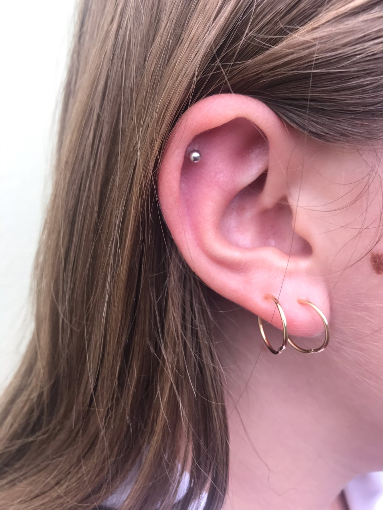

The teachers say that our uniform rules are strict because we are representing the school when we are in public and they don’t want us to give the school a bad reputation. I agree, I don’t want to give our school a bad reputation but if I am being honest... I don’t think the public really cares about what we look like, but what the public does care about is if we are causing attention for the wrong reasons or disturbing them. As long as we are kind and polite in public, the public really doesn’t care.
The reason why I think school uniform rules should be more relaxed is because with all of these super strict rules, it doesn’t allow us to have the opportunity to express our individuality and be who we are. How does the colour of your hair or the way you style it become more important than your willingness to learn?
Here are some examples of uniform rules that they have at lots of schools:
Here are some photos of things that would not be allowed at school:
 